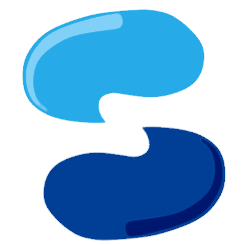
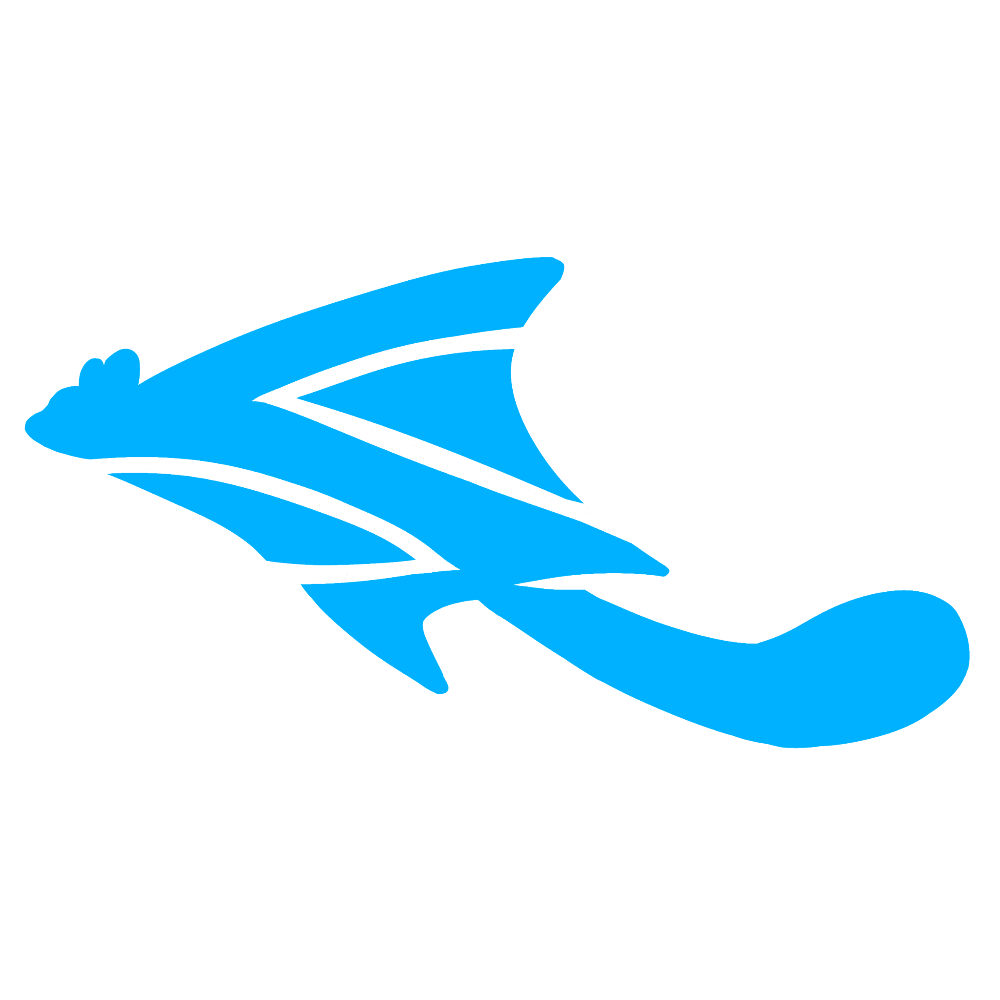
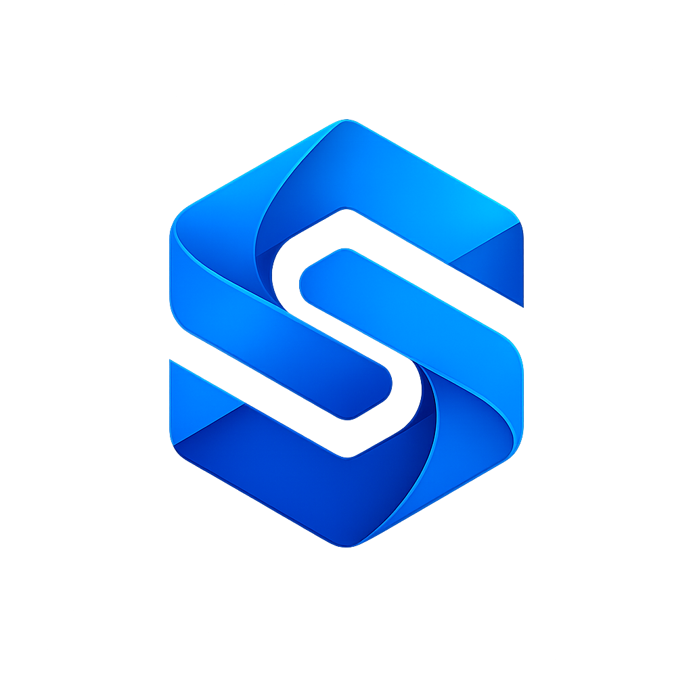
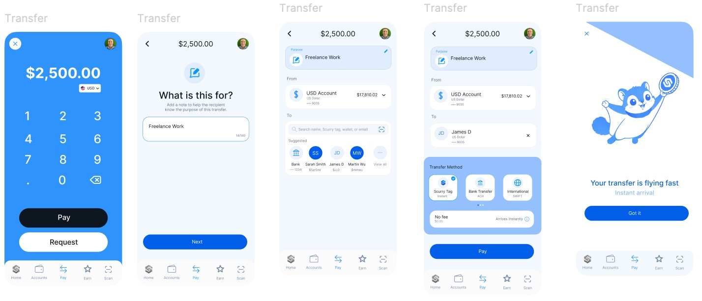
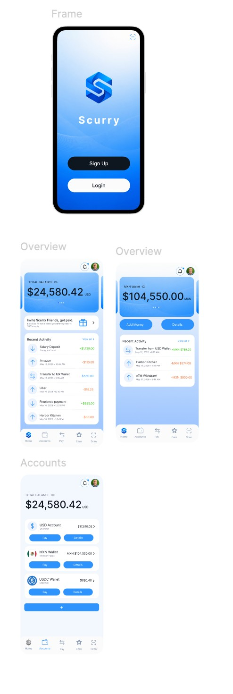
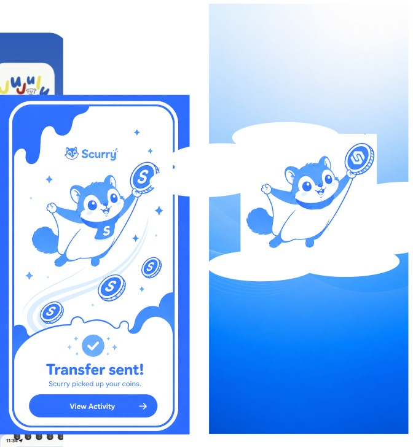
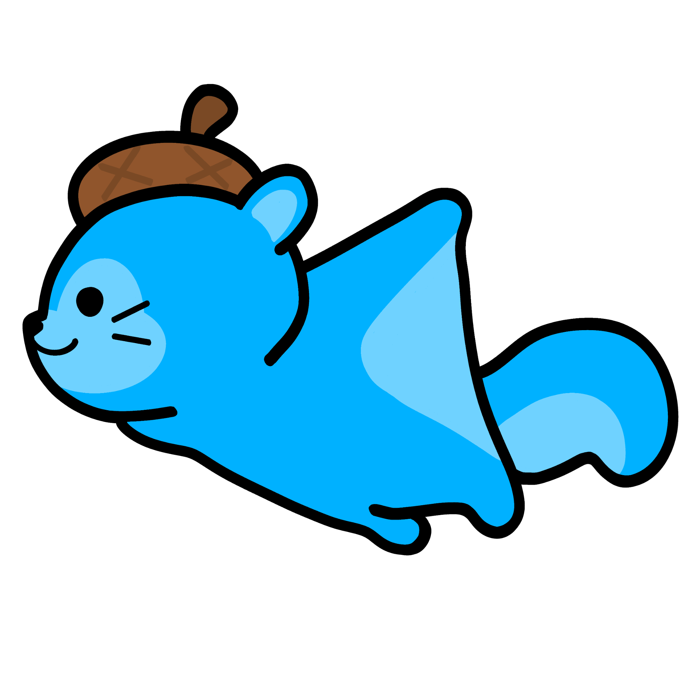
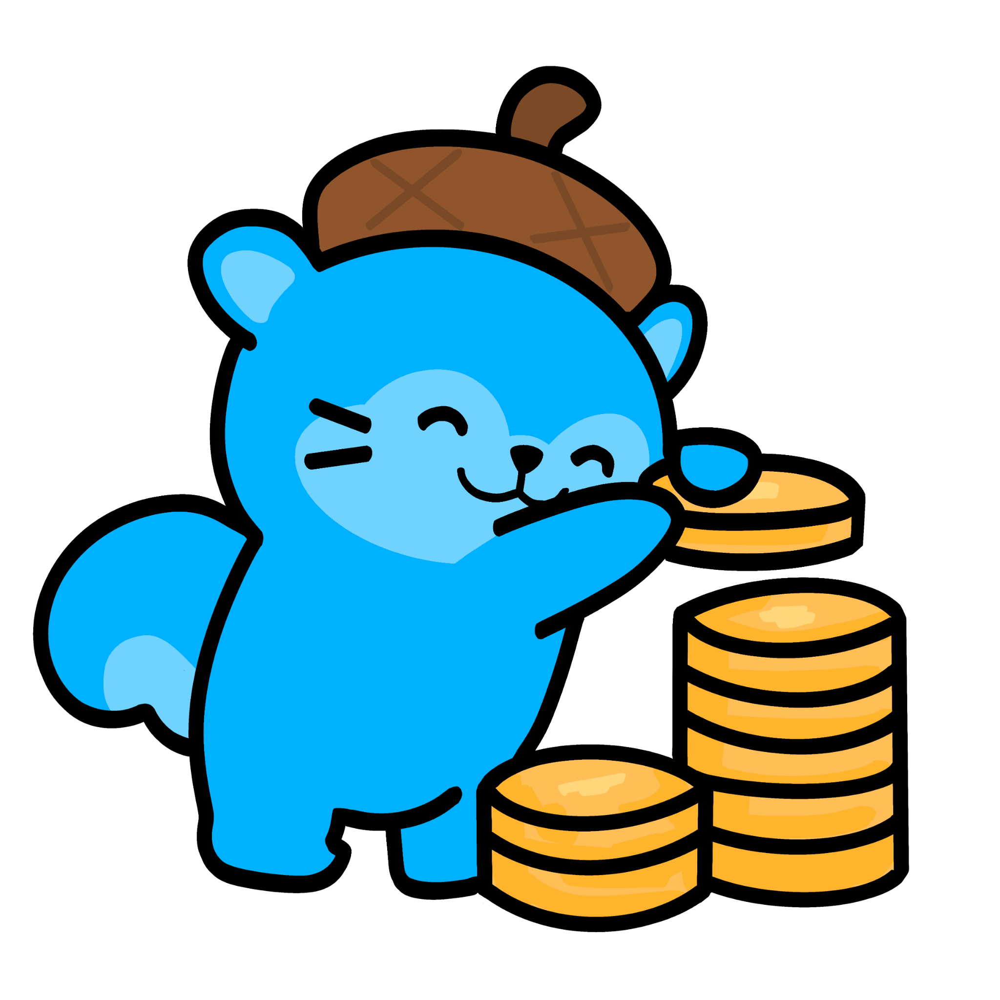
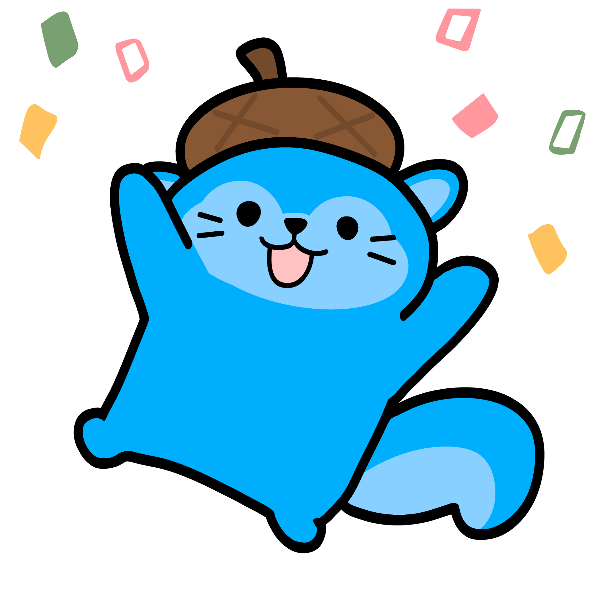
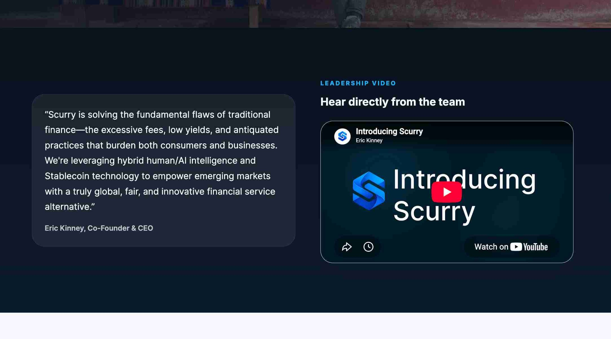

CLIENT WORK / BRAND IDENTITY & DIGITAL PRODUCT
SCURRY
Giving an early-stage fintech startup a recognizable identity, a front-facing website, and a friendlier product personality.
Project Overview
Scurry is an early-stage financial technology startup developing stablecoin cards and global USD accounts for consumers and businesses in emerging markets. When I joined the project, the team had a product concept and a sense of what the company wanted to communicate, but much of its public-facing identity had yet to be established.
What began as a request to revisit an existing logo grew into a broader design role: shaping a visual system, helping build the introductory website and waitlist experience, exploring early app screens, and designing supporting assets across video, illustration, and motion.
The through line was to make a complex financial concept feel credible, approachable, and easier to picture before the product's launch.
Logo Exploration
The first assignment was a logo rework. I was sent a low-resolution image of an S-shaped mark, but rather than polishing only that reference, I explored several possible directions for the brand. I ultimately focused on three distinct concepts.
One stayed close to the original form. Another turned the team's flying-squirrel idea into a motion-inspired symbol, with an S-like shape that could also suggest an arrow and the speed of a transaction. The final direction brought more dimension and movement to the S itself.



The team selected the dimensional S. It could stand on its own as an app icon or brand symbol, while also providing a recognizable starting point for the rest of the visual language.
Visual Direction
With a logo direction in place, I researched the visual language of digital banking, payment apps, cryptocurrency products, and other financial platforms. I paid attention to how these products convey security while still feeling simple and current.
Blue became the foundation of the identity. I associated it with reliability and trust, while darker backgrounds and brighter electric blues helped bring in a more technology-focused energy. I explored the palette in Figma and carried that direction through the website, mockups, banners, and video title screens.
Dark foundations for contrast. Bright blue accents for momentum. Clear typography for a financial product.
Website & Waitlist
Scurry needed a website before the app was ready: a public place to introduce the company, explain what it was building, and invite people to join the waitlist. I applied the developing brand identity to a front-end experience that felt modern but approachable.
The phone preview became an important part of the homepage. My first version animated the early mockups within a phone frame, panning up a screen before transitioning to the next. As the product became more concrete, I suggested replacing that sequence with a recording of the interface. A real screen capture gave visitors a clearer sense of the interactions and what using the app could look like.
App Mockups
In parallel with the website, I worked on early app mockups to make the product concept more tangible. The screens explored how Scurry's identity could extend into familiar financial tasks, including viewing account balances, navigating between accounts, and initiating transfers.
I kept the layouts clean and blue-led so the product felt connected to the public website. These screens also became useful communication tools: they made it easier to discuss the experience, present what the app might become, and experiment with how it should appear inside the phone preview.


Select either image to open a larger version.
Meet Murry
Murry, a flying-squirrel character envisioned for Scurry's AI assistant, came up repeatedly as a nice-to-have rather than a fully defined part of the product. I wanted his eventual appearance to feel useful and intentional instead of like a mascot added at random.
For quick iteration on the early app mockups, I first cleaned up an AI-generated transfer-page concept provided by other members of the team and used it as a temporary visual in the screens shown above. I later illustrated a more expressive set of Murry poses using the brand's blue colors, so the character could support specific moments in the experience. A character can give a digital product warmth, but where it appears matters just as much as how it looks.




Giving the mascot a purpose
I also thought through screens where Murry could naturally fit. Celebrating a completed transfer, suggesting movement when money is sent, and making a savings-related idea more endearing all gave the character a reason to appear.
I created additional Murry poses for other situations as well; the three illustrations above are a selection that best demonstrates how his expression and actions could change with the context.
Beyond the Screen
As the identity developed, I also created visual materials beyond the main website and app concepts, including banners and video title screens. Reusing the same logo, typography, and blue-led visual language made these materials recognizable as part of Scurry rather than disconnected one-off graphics.
One exception was a set of quick banners I was asked to create for Scurry’s LinkedIn pages before I had time to fully flesh out the brand identity. Because they were made so early, they use a different shade of blue and gray text rather than the navy or black used in later materials. Their appearance reflects that earlier stage of the branding process.
The project also gave me room to think about motion as a communication tool. From the first animated phone mockups to the later screen-recorded product preview, I learned to choose movement for what it helps a viewer understand, not just for visual effect.

Summary
Scurry started with a single logo reference and expanded into a connected set of brand and product touchpoints. The challenge was not simply to create attractive individual assets, but to develop a look that could carry through a public website, app mockups, illustrations, banners, and video materials.
What I value most from the project is the process of moving from a loose concept toward a more consistent experience. Research helped establish the tone, logo exploration gave the brand a recognizable anchor, and the website and mascot decisions showed how that identity could work for real people encountering Scurry for the first time.